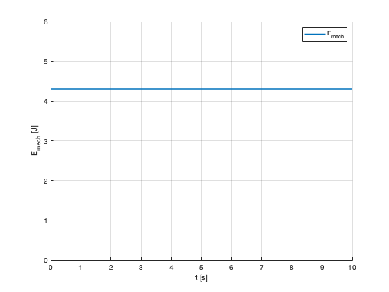

Problem 2 c)
In this code, we verify that the mechanical energy of the system remains constant through time.
Contents
close all clear all clc
Parameters
m=0.5; %kg r=1; %m g=9.81; %m/s^2 % Initial conditions (arbitrary) q0=[pi/3; 0]; %rad dq0=[0; pi]; %rad/s x0=[q0;dq0]; % Integration limits tspan=[0 10]; %s
Useful functions
Mass matrix
M=@(q) m*r^2*diag([1,sin(q(1))^2]); invM=@(q) 1/(m*r^2)*diag([1,1/(sin(q(1))^2)]); % Non linear forces fnon=@(q,dq) [0.5*m*r^2*(dq(2)).^2*sin(2*q(1))+m*g*r*sin(q(1)) ;... -m*r^2*dq(2).*dq(1)*sin(2*q(1))]; % Function to integer f=@(t,x) [x([3 4]) ; invM(x([1 2]))*fnon(x([1 2]),x([3 4]))];
Integration
options = odeset('RelTol',1e-10);
[t,x] = ode45(f,tspan,x0,options);
Energies
Tpw_a=@(x) 0.5*x([3 4])'*M(x([1 2]))*x([3 4]); Upw=@(x) m*g*r*cos(x(1)); Epw_a=@(x) Tpw_a(x)+Upw(x); Emech=NaN(length(t),1); T=NaN(length(t),1); U=NaN(length(t),1); for i=1:length(t) Emech(i)=Epw_a(x(i,:)'); T(i)=Tpw_a(x(i,:)'); U(i)=Upw(x(i,:)'); end
Plot
figure('Numbertitle','off','Name','Mechanical Energy'); grid on hold on plot(t,Emech,'LineWidth',1.5,'DisplayName','E_{mech}'); ylim([0 6]); xlabel('t [s]');ylabel('E_{mech} [J]'); legend show
Comments
As expected, the mechanical energy is constant through time. This is a good indicator of a correct dynamics analysis.